YS FLIGHT SIMULATOR
PILOT'S MANUAL
REVISION 2013/08/09
|
YSFLIGHT Family:
YSFLIGHT.COM - 飛行機ソフトのコーナーからダウンロードできます。
なお、飛行機ソフトのコーナーにはシェアウェアのスクリーンセーバーなども置いてあります。YSFLIGHTはフリーですが、
おかげさまで、前ほど作者の財政は窮乏していませんが、1500円ぐらいカンパしてもいいぜ！という方は、ひとつ買ってください。
|
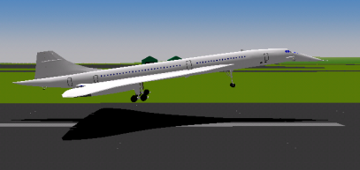CONTENTS
Windows XP Service Pack 3で、ネット対戦を利用したい場合は、こちらもご参照ください。
(*)YSFLIGHTサポートページも同時にご参照ください。サポートページには、
http://www.ysflight.com
からリンクしています。
はじめに
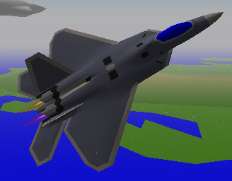このプログラムはフライトシミュレータです。このプログラムでは、次の飛行ができます。
-
離陸と着陸
-
コンピュータ機との格闘戦
-
地上攻撃(地対空砲付き)
-
地上攻撃に対する迎撃戦
-
アクロバットチームの編隊長
-
スモークをひいて空に模様を描く
-
ネットワーク対戦
また、30機種以上の飛行機の中から操縦する機体を選ぶことができます。
他のフライトシミュレータプログラムと同じように、飛行中にコクピット以外の視点から飛行機を見ることもできます。外から自分の操縦する飛行機を見るモードでは、操縦に合わせてランディングギアが上下したり、アフターバーナーの炎が点火したり、可変翼を持った機体では、翼が前後に動く様子を見ることができます。また、プロペラ機を操縦しているときは、プロペラが回っている様子を見ることができます。
必要システム
このプログラムを実行するには、次の環境が必要です。
-
Windows XP SP3, Windows 7,
Windows 8, Linux, Mac OS 10.6.x or higher
-
Pentium 1.2GHz以上.
-
20MB程度の空きメモリ
-
DirectX 9.0以上 または OpenGL 1.2以上
Windows XP Service Pack 3で、ネット対戦を利用したい場合は、こちらもご参照ください。
また、次のデバイスは、必要ではありませんが、推奨します。
プログラムの起動
[WINDOWS]
プログラムグループ、
スタートメニュー -> プログラム -> YS FLIGHT SIMULATOR
から、次のどちらか一方を選んで実行してください。 なお、SHIFTキーを押しながら起動すると、必ずウィンドウで(フルスクリーンじゃなく)起動します。詳しくはOption
Dialogを参照してください。
| YSFLIGHT OpenGL 2.0 |
OpenGL 2.0: グラフィックスは最高画質ですが、ある程度以上のディスプレイアダプタが必要です。 |
| YSFLIGHT OpenGL 1.x |
OpenGL 1.x: PCのディスプレイアダプタがOpenGLアクセラレータを装備している場合はこちらの方が一般的に高速に動作します。 |
| YSFLIGHT Direct3D |
Direct3D9:
ディスプレイアダプタのベンダーには無責任なところがあるようで、Direct
3Dは高速に描画できるのに、OpenGLはうまく表示できなかったり高速描画できなかったりするディスプレイアダプタが結構あるようです。不幸にしてそういうのに当たってしまったら、Direct
3Dバージョンを使ってみてください。 |
| YSFLIGHT Console Server |
ネットワーク対戦のサーバー専用プログラムです。このプログラム自体で飛行はできません。 |
もしも、どちらのプログラムを使えばいいのかわからない場合は、とりあえず、それぞれ使ってみて使い心地のいい方をご利用ください。
[Mac]
ファイルを展開すると、バンドル「ysflight」ができるので、これをダブルクリックしてください。
[Linux]
ファイルを展開したディレクトリに移動して、
% ysflight2
とタイプしてください。(% はプロンプトのつもりなので実際にタイプするのはysflightだけです。)なお、これで起動できない場合は、
% ./ysflight2
のようにタイプしないと起動しないことがあるようです。(pathに . が入っていない場合)
ysflight2はOpenGL2.0対応版ですが、もしも、お使いの環境がOpenGL 2.0に対応していないようでしたら、代わりに ysflight
とタイプしてください。
また、サーバー専用バージョンを、
% ./ysflight-consvr
とタイプして起動することができます。コンソールのウィンドウサイズを最低25行以上にしておいてください。そうでないと表示が崩れます。
なお、コマンドパラメータも参照してください。Linux版にはNon-OpenGL版はありません。なので、OpenGLを加速できないグラフィックスボード/チップではほとんど使い物にならないと思います。
プログラムの終了
File->Exit を選ぶとプログラムを終了します。
まず飛んでみる
さて、面倒なこまかい説明に行く前に、とりあえず飛んでみたい人は飛んで見ましょう。次の手順に従ってください。
-
プログラムを起動する。
-
ESCキーを押してデモンストレーションを終了する。
-
シミュレーション(S) -> フライトの新規作成(C)を選ぶ。
-
"Create New Flight"ダイアログで、"今すぐ飛行開始"をクリック。

-
"Joystick is not connected or configured"
というメッセージが出るかもしれません。これは、ジョイスティックを 接続していない、あるいは、ジョイスティックを設定していない場合に出ます。もしも、ジョイスティックを接続しているのであれば、
スタートメニュー→設定→コントロールパネル→ジョイスティック
を選んで、設定したあとでもう一度やりなおしてみてください。もしも、ジョイスティックを持っていなくて、上のメッセージを表示したくない場合は、
シミュレーション設定ダイアログに行って、ジョイスティックの割り当てをすべてオフにしてください。 (あるいはジョイスティックを買ってしまいましょう。(^_^;))
-
ジョイスティックを中立位置にしてください。もしも、外付けジョイスティックを持っていない場合は、マウスを操縦桿として使わなくてはなりません。この画面で、マウスを動かすとバーチャル操縦桿がマウスの動きに合わせて動くので、マウスの動きと操縦桿の動きの対応をおぼえてください。
-
ジョイスティックを中立位置にしたら、トリガボタン、マウスボタンあるいはスペースキーを押すとフィールドに出ます。
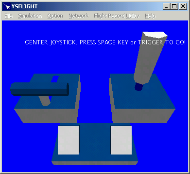
-
フィールドに出ます。
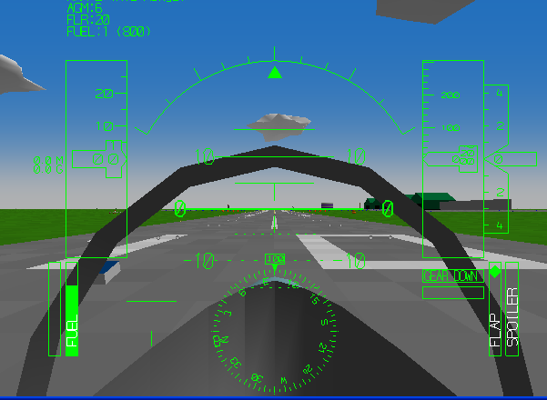
この時点で飛行準備完了です。操縦操作の詳細はここでは説明しません。皆さんがすでに飛び方を知っていることを期待してるんですが(^_^;)飛び方について、
Flight Simulator Formation Aerobatic 98(航空自衛隊協力)
なる本に書きましたので、よかったら買って読んでみてください。
このページからオンライン販売で購入できます。 多分もう売ってないと思います。すんません(^_^;)
ここでTABキーを押すとアフターバーナーを点火します。120ktぐらいになったら少しずつ操縦桿をひいて(マウスを下に動かす)飛行機を離陸させてください。
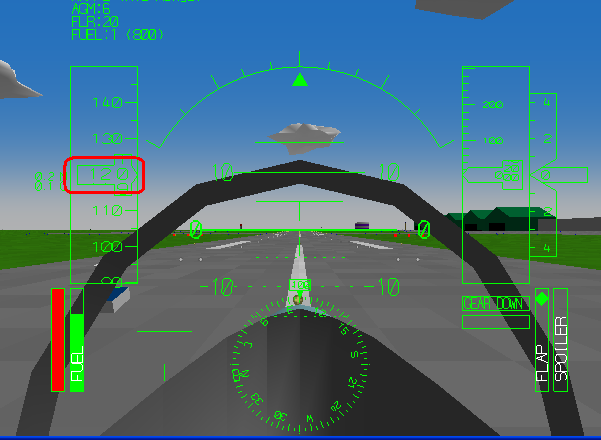
なお、速度が十分に上がらないうちに操縦桿を引くと、しりもち事故の原因になったり、大きな飛行機だと空気抵抗が大きくなって滑走路を使い切る前に離陸に必要な速度に達することができなくなったりします。キー操作などについては、
操縦方法を参照してください。
プログラムが遅いと感じたら...
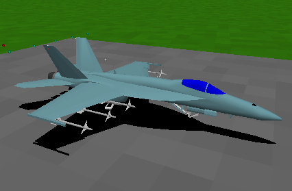このプログラムは、少なくとも3年前のPCで快適に動くことを目標に作っています。実際、作者は2008年物のMacBook
Proで開発とテストをしています。ですが、それでも快適に動作しない場合は、いくつかの視覚効果をオフにするか、あるいは解像度を下げることで、スピードをあげることができる場合があります。
まず、Windows版での話ですが、インストールパッケージは、"OpenGL 2.0", "OpenGL
1.x", "Direct
3D"の三種類の実行ファイルを含みます。それぞれの実行ファイルは、スタートメニューからひとつを選ぶことができます。
最近のPCは、ほとんど3次元グラフィックスのアクセラレーションに対応しています。もしも、搭載しているグラフィックスアクセラレータが十分なパフォーマンスを持っていれば、OpenGL
2.0用を使うことで、十分なパフォーマンスと画質を両立できます。ですが、ベンダーによって、OpenGLドライバの実装がいい加減な場合があって、その場合、正常に動作しなかったり画面が崩れたりする場合があります。その場合、Direct3D用を使ってみてください。逆の場合もあって、OpenGL用が正常に動作するにもかかわらずDirect3D用が動作しない場合もあります。また、OpenGLの2.0以降に対応していない場合、OpenGL
1.x用のみ正常に動作することもありえます。プログラム側でもチェックを入れていますが、ドライバがOpenGL
2.0以降に対応しているという情報を返すにもかかわらず実は未対応という例が多くあるようです。
Linux版には、"CPU Rendered", "Direct
3D"版はありません。なので、お使いのシステムのX-WindowでOpenGLが使えるようになっていることを確認してください。一からLinuxをインストールした場合だと、多分デフォルトではOpenGLドライバは入っていません。デフォルトでOpenGLドライバが入っていない場合、非常に苦痛なプロセスを経て、OpenGLドライバをインストールしないとYSFLIGHTは動作しません。（少なくとも、僕はLinuxのシステム管理がよくわかってるわけじゃないので、最初はわけがわからず非常に苦痛だった。）ですが、OpenGLドライバのインストールに成功すると、（そして、ディスプレイドライバが3次元グラフィックスのアクセラレーションに対応していれば）YSFLIGHTを快適に利用することができます。
また、フィールドの選択もプログラムの実行速度に関係します。ほとんどのフィールドには、多くの地上オブジェクトがありますが、PCがあまり高速ではない場合、地上オブジェクトの処理に時間がかかって、プログラムの実行速度が遅くなります。ですが、エアフィールド"SMALL_MAP"を選ぶと、あまり多く地上オブジェクトが無いので、地上オブジェクト処理による実行速度の低下はありません。空中戦に出る場合などは、地上オブジェクトはあまり気にならないと思うので、このフィールドを選んでみるといいと思います。これに対して、 2001/07/18バージョンで新たに追加したTOHOKUは、空港が6個もあったりして非常に重いです。TOHOKUマップで快適に飛ぶには、PenIII
450MHz＋高速なグラフィックスカードが必要です。多分、NORTH_KYUSYUが標準でついてくるマップの中でもっとも重いです。NORTH_KYUSYUを快適に使うには、結構いいPCのシステムがいると思います。
それでも遅いと思ったら、 シミュレーション設定ダイアログに行って、いくつかの効果をオフにする必要があります。Option->Configを選んで、"Draw Fast"ボタンを押して見てください。こうすると、自動的に高速描画に適した設定になります。他にもオフにできる項目はありますが、あんまりお勧めしません。(詳細については「シミュレーション設定ダイアログ」を参照してください。)
それでもまだ遅い場合は、解像度を下げる方法があります。オプションダイアログに行って、解像度を下げて見てください。
WindowsNT上でこのプログラムを実行している場合、飛行中しばしば短い時間一時停止するように感じるかもしれません。多くの場合、スロットルセッティングを変えたり、機関砲を発射/発射停止したりした場合に発生します。この場合、オプションダイアログに行って、サウンドをオフにしてみてください。この一時停止の問題は、WindowsNTのWAV再生機能の問題です。
シミュレーション設定ダイアログ
シミュレーション設定ダイアログでは、ジョイスティックの割り当て、スモーク、その他の効果について設定できます。
[デフォルトタブ]
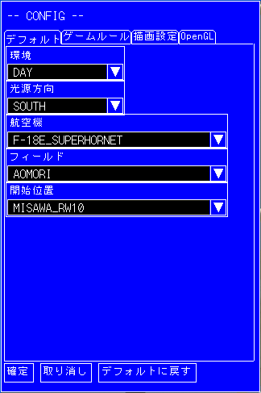
環境
DAY(昼)かNIGHT(夜)を選びます。
光源方向
どの方向から光が当たるかを指定します。
航空機
頻繁に使用する飛行機の種類を指定します。ここで選んだ飛行機が、Create
New FlightやFly Endurance Modeの飛行機選択画面で最初に選ばれています。
フィールド
デフォルトのフィールドを指定します。
開始位置
デフォルトの飛行開始位置を指定します。
[ゲームルールタブ]
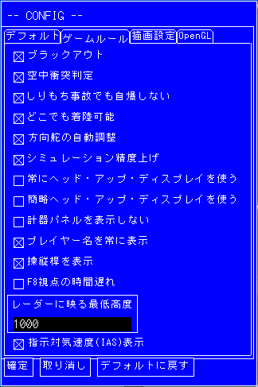
ブラックアウト
このチェックボックスがオンだと、高いGがかかったときにブラックアウトします。
空中衝突判定
このチェックボックスがオンだと、飛行機同士の空中衝突を判定します。オフだと判定しません。
しりもち事故でも自爆しない
このチェックボックスがオンだと、離着陸時に機体後部を地面についても爆発しません。
どこでも着陸可能
このボックスがオンだと文字通りどこでも着陸できるようになりますが、スピードが20kt以下じゃないと揺れてひっくり返ってしまうので、事実上ヘリコプターとVTOL機以外はどこでも着陸できません。
方向舵の自動調整
このチェックボックスがオンだと、方向舵を自動調整して、横滑りをゼロにします。飛行機は、旋回するとき、横滑りがゼロになるように方向舵をコントロールします。でも、これをキーボードでやるのは面倒なので、(多分、多くのフライトシミュレータパイロットの皆さんは、スロットルまでは持っててもラダーペダルまでは持ってないと思うので)、自動調節にすることができます。
シミュレーション精度上げ
このチェックボックスがオンだと、プログラムは航空力学計算を20分の1秒ごとに計算します。このチェックボックスがオフだと、一度画面を再描画するたびに一度計算します。画面の再描画は普通20分の1秒よりも長い時間がかかるので、このチェックボックスをオフにすると精度は落ちます。このボックスは、よっぽど速度が欲しい場合以外はオンにしておくことをお勧めします。
常にヘッド･アップ･ディスプレイを使う
このチェックボックスがオンだと、機外視点時もHUDを表示します。
簡略ヘッドアップディスプレイを使う
このチェックボックスをオンにすることで、簡略ヘッドアップディスプレイを使うことができます。解像度が低い環境などで、標準ヘッドアップディスプレイの表示が小さくて読みにくい場合は、簡略ヘッドアップディスプレイの方が読みやすい場合があります。
計器パネルを表示しない
このチェックボックスがオンだと、計器パネルが設定してある機種でもHead Up Displayを表示します。
プレイヤー名を常に表示
このボックスがオンだと、コクピットで正面を見ていなくても、プレイヤー名を画面に表示します。
操縦桿を表示
このボックスがオンだと、ゲーム中、ジョイスティックのグラフィックスを表示します。
F8視点の時間遅れ
機外カメラ（デフォルトでF8キー）の時間遅れ効果のオン/オフを指定します。このチェックボックスがオンだと、カメラが少し遅れて機体についていきます。
レーダーに映る最低高度
高度XXXX以下で、プレイヤー機から遠い機体はレーダーに表示しません。（単位はフィート）
指示対気速度表示
計器に表示する気速を、指示対気速度(IAS)にするか、真対気速度(TAS)にするかを選びます。チェックボックスがオンだとIAS表示になります。本物の飛行機の計器にはIASが表示されるので、デフォルトではオンになっています。
[Graphicsタブ]
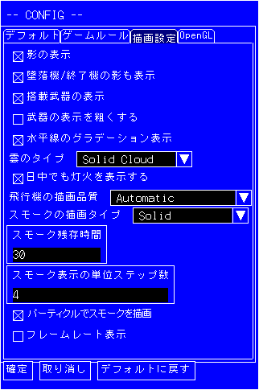
影の表示
このチェックボックスがオンだと、飛行機が低空にいるとき、精密な影を描きます。このチェックボックスをオフにしても影は描画しますが、すごい粗い影になっちゃいます。
墜落機/終了機の影も表示
このチェックボックスがオンだと、撃墜された、あるいは墜落した飛行機の影を描きます。（残骸のつもりなんですが....）。が、ネットワークモードでサーバーをしていると、影がいっぱいになってしまう、という問題が起こるようなので（まさかそんなに長い時間ネットワーク対戦する人がいるとは思わなかった）、オン/オフを設定できるようにしました。
搭載武器の表示
このチェックボックスがオンだと、飛行機に搭載している武装を描きます。
武器の表示を粗くする
このチェックボックスがオンだと、武器を粗く表示します。多数の武器が同時に描画されるような場合は、スピードが向上します。
水平線のグラデーション表示
このチェックボックスがオンだと、水平線のグラデーションを描きます。オフにした方が速いですが、オンの方がもちろん見栄えがいいです。
雲のタイプ
「Solid Smoke」を選ぶと質感のある雲を描き、「Flat Smoke」を選ぶと平たい雲を描きます。
日中でも灯火を表示する
このボックスがオンだと、昼間モードでも滑走路灯と街灯を表示します。
飛行機の描画精度
Automatic :
遠くの飛行機は粗く、近くの飛行機は細かく表示します。
Always High Quality :
距離にかかわらず細かく表示します。(高速なPCが必要)
Always Coarse : 距離にかかわらず粗く表示します。(PCが遅いときこうするとスピードが上がる)
スモークの描画タイプ、スモークの残存時間
スモークのタイプ、持続時間と解像度を設定します。
スモークタイプは、TOWEL,SOLID,CIRDLE,NOODLEの中から選びます。TOWELを選ぶと、なが〜いタオルのようなスモークを引きます(別名いったんもめんスモーク)。SOLIDを選ぶと、よりスモークっぽいスモークになりますが、描画は遅くなります。NOODLEを選ぶと、なが〜いソウメンのようなスモークになります。描画は速いですがちょっとみじめです(^_^;)CIRCLEは、一応作ってみたんですが、速くも無いし見栄えもしないので、使わない方がいいと思います。
Remain ?? seconds というのはスモーク持続時間です。
スモーク表示の単位ステップ数
スモーク描画の解像度を指定します。小さい値を指定するほど高い精度で描画しますが、やっぱり重くなります。初期状態では4ステップになっています。
[OpenGLタブ]
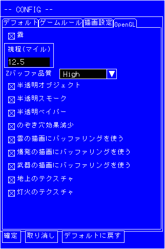
霧
このチェックボックスがオンだと、霧を表示して、少しリアリスティックになります。OpenGL版のみ有効です。が、OpenGLが速いグラフィックスカード(さらに霧が速く描けるやつ)でないと、遅くなります。
Zバッファ品質
OpenGLのZ-Bufferingの解像度を指定します。LOWを選ぶとスピードは上がりますが、本来他のオブジェクトの陰で見えないはずのものが見えたりします。HIGH,
VERY HIGH, SUPER HIGHの順に解像度が高くなり、正しくグラフィックスを描画するようになりますが、OpenGLが速いグラフィックスカードでないと、遅くなります。なお、OpenGL版でのみ有効です。
半透明オブジェクト
このボックスをチェックすると、オブジェクトを半透明で描画するようになります。OpenGL版でのみ有効です。
半透明スモーク
このボックスをチェックすると、スモークを半透明で描画するようになります。OpenGL版でのみ有効です。
半透明ベイパー
このボックスをチェックすると、翼端ベーパーを半透明で描画するようになります。OpenGL版でのみ有効です。
のぞき穴効果減少
半透明処理によって、たまに、壁にさえぎられて見えないはずのものが、透けて見えるのぞき穴現象が発生することがあります。この現象を完全に除去するのはちょっと難しいのですが、ある程度減らすことはできます。このチェックボックスをオンにすると、プログラムは、のぞき穴現象を減らす努力をします。が、若干計算時間を余計に食います。オンのときとオフのときの違いは次の通りです。
|
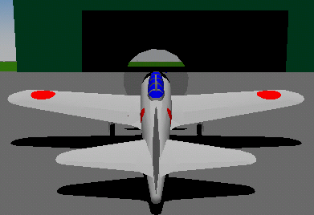 |
←チェックボックスオフのとき。本当は、格納庫の向こうで見えないはずの地平線が、プロペラに透けて見えてしまっている。 |
|
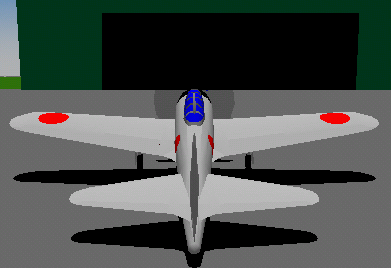 |
←チェックボックスがオンのとき。 |
雲の描画にバッファリングを使う
このボックスがオンだと、雲を描画するとき、OpenGLの「ディスプレイリスト」機能を使います。グラフィックスカードがじゅうぶんなメモリを搭載している場合
、このボックスをチェックしておいた方が描画が高速になります。
武器の描画にバッファリングを使う
このボックスがオンだと、武器を描画するとき、OpenGLのディスプレイリスト機能を使います。
爆発の描画にバッファリングを使う
このボックスがオンだと、爆発を描画するとき、OpenGLのディスプレイリスト機能を使います。
地上のテクスチャ
このチェックボックスがオンだと、地上のポリゴンにテクスチャマッピングを使って濃淡をつけます。
灯火のテクスチャ
このチェックボックスがオンだと、滑走路灯の表ににテクスチャを使用します。
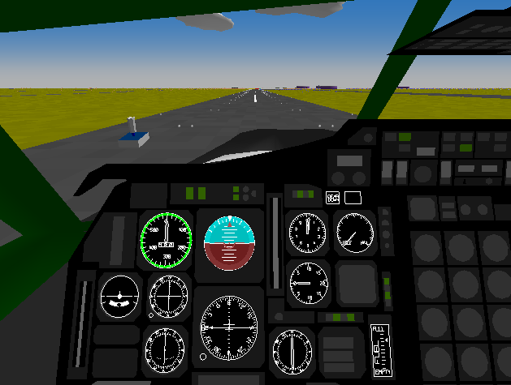
オプションダイアログ
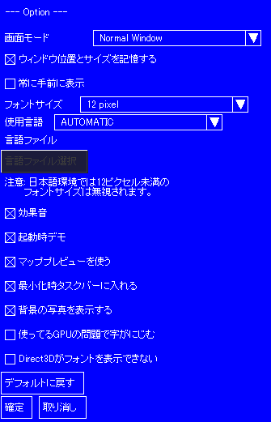オプションダイアログでは、プログラムの設定変更ができます。ダイアログを開くには、
Option→Option
を選んでください。
画面モード: 普通のウィンドウ(Normal Window)、最大化(Maximize)、または、フルスクリーン解像度を選ぶことができます。
ウィンドウ位置とサイズを記憶する:
チェックすると、プログラム終了時のウィンドウ位置とサイズを記憶して、次回起動時に同じ位置にウィンドウを表示します。
常に手前に表示: 他のウィンドウよりYSFLIGHTのウィンドウを常に手前に表示します。
フォントサイズ: フォントの縦の大きさを指定します。
使用言語: 自動選択 (AUTOMATIC)、英語 (FORCE ENGLISH)、言語ファイルを選択 (SELECT LANGUAGE
FILE)からひとつを選ぶことができます。言語ファイルを選択にすると、外部の言語ファイルを指定して使うことができます。
言語ファイルを選択: 外部の言語ファイルを指定します。
効果音: 効果音のon/offを指定できます。
起動時デモ: 起動時デモのon/offを指定できます。
マッププレビューを使う: マッププレビューのon/offを指定できます。
最小化時タスクバーに入れる: これをチェックすると、最小化したときタスクバーに格納します。
背景の写真を表示する: 背景の写真のon/offを指定できます。
使ってるGPUの問題で字がにじむ: Direct 3Dの問題で、フォントがにじんでしまう場合、これをチェックすると直るかもしれません。
Direct 3Dがフォントを表示できない: Direct
3Dは本当に悪いAPIで、フォントを正常に表示できなくなる場合があります。その場合、これをチェックすると直るかもしれません。
"Remember Window Position and Size"のオプションは、ScreenmodeがNormal
Windowのときのみ有効で、オンに設定するとプログラム終了時のウィンドウサイズと位置を記憶して、次回起動時に記憶した位置とサイズを復元します。
YSFLIGHTの最新バージョンでは、メニューやダイアログをWindowsに依存せずに、すべて独自のプログラムで表示するようにしたのですが、それが原因でOpenGL版でマップ選択時、表示が崩れることがあるようです。その場合、Use
Map Previewをオフにすると崩れないことがあるようです。その現象が発生するようでしたら、試してみてください。
最近OpenGLバージョンでも解像度を指定できるようになりましたが、OpenGLバージョンでNORMAL
WINDOW以外の解像度を選ぶと、ビデオカードによっては正しく動作しないようです。もしも、いったんNORMAL
WINDOW以外の解像度を選んでしまってOpenGLバージョンが起動しなくなった場合は、次のいずれかの方法でふたたび起動できるようになります。
(1) SHIFTキーを押しながら起動すると必ずNORMAL
WINDOWで起動するので、SHIFTキーを押しながら起動して、オプションをNORMAL
WINDOWに設定しなおす。
(2) それで直らなかったら、スタートメニューのプログラムの"YS FLIGHT SIMULATION SYSTEM
2000"の"YSFLIGHT --- RESET SETTING"を選んで、設定を初期値に戻す。
(3) それでも直らなかったら、CPU-Renderedバージョンを起動してオプションをNORMAL WINDOWに設定しなおす。
(4) それでもだめだったらYSFLIGHTを再インストールする。
上記の3点が全部だめだった場合は、ビデオカードのドライバか何かに問題があるんじゃないかと思います。
なお、Intelの古いGPUで、Direct
3D使用時、ビットマップがにじんで、字が読みづらくなる問題があるようです。その現象が発生すると、簡略ヘッドアップディスプレイの文字が非常に読みづらくなります。その問題が発生したときは、「GPUの問題で字がにじんで読みにくい」をチェックすると、フォントの表示位置がずれる問題が発生しますが、にじむ問題は出なくなると思います。。
キーボード・マウス・ジョイスティックの割り当てを変更する
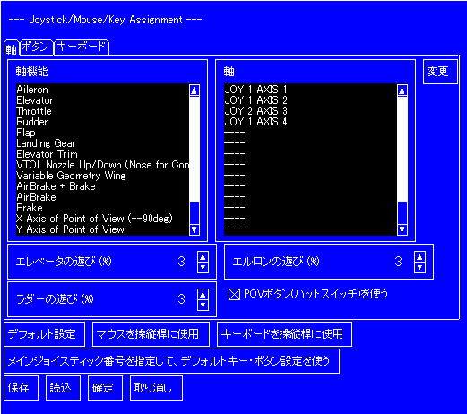
YSFLIGHTでは、各機能へのキー/マウス/ジョイスティックの割り当てを変更することができます。それには、
Option → Config Key/Mouse/Joystick
Assignment
を選んでください。右のようなダイアログが出ます。
ここで、例えば、スロットルをジョイスティック2の軸3に割り当てたい場合、Joystick/Mouse
AxesのリストでThrottleを選び、"Change"ボタンをクリックしてください。次に、ダイアログからJOYSTICK 2
AXIS 3を選び（反転する必要があればReverseをチェックして)OKボタンをクリックしてください。
なお、Saveボタンをクリックすると、このダイアログの設定内容をファイルに保存することができます。セーブした設定内容は、YSFLIGHTを再インストールしたり、新バージョンをインストールしたときなど、Loadボタンで読み込むことができます。ただし、旧バージョンで保存した割り当てはを新バージョンで読み込んだとき、新バージョンの新機能にキー、ボタン、軸が割り当てられません。ですので、その場合は、読み込んだ後で新機能にキーまたは軸を割り当ててください。
割り当てを初期状態に戻すには、Defaultボタンをクリックしてください。
もしも、操縦桿として使いたいジョイスティックが、ジョイスティック#1としてシステムに認識されていない場合、軸をひとつずつ設定しなおす代わりに、「メインジョイスティック番号を指定して、デフォルトキー・ボタン設定を使う」をクリックして、操縦桿として使いたいジョイスティックを一周円を描くように動かしてください。
シミュレーション開始
このシミュレータでは次の4種類の飛行を選ぶことができます。
フリーフライト
フリーフライトモードでは、自由に飛びまわって飛行の練習をすることができます。フリーフライトモードを開始するには、Simulation
-> Create New Flightを選んでください。次のダイアログが開きます。
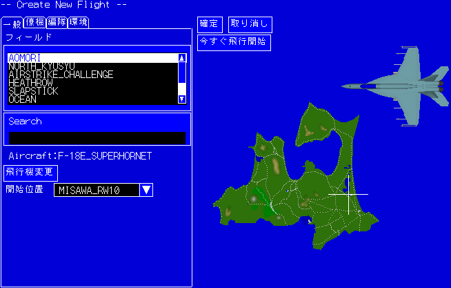
フィールド 使用するマップ（シーナリ）を選びます。
Search キーワードでマップを探すことができます。複数キーワードをスペースで区切ってタイプすることもできます。
飛行機変更 このボタンを押して、使用する航空機を選ぶことができます。航空機選択も参照してください。
開始位置 マップ内での開始位置を選びます。
確定 このボタンを押すと、新しいフライトを作成して、メインメニューに戻ります。その後Simulation
-> Flyを選ぶことで飛行を開始することができます。メインメニューに戻ると、他に、作成したフライトをファイルに保存しておいて、後から読み込んで同じ条件で飛行することができます。が、すぐに飛行を開始したいときは、"Fly
Now"ボタンを押してください。
取り消し 新しいフライトを作らずにメインメニューに戻ります。
今すぐ飛行開始 飛行を開始します。
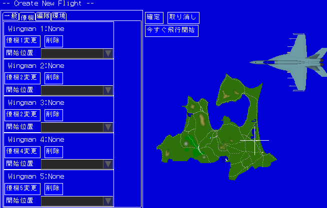
僚機X変更
自分の他に、最大５機までの僚機を登場させることができます。このボタンで、僚機の機種を選ぶことができます。
削除 僚機を削除します。
開始位置 僚機の開始位置を選びます。
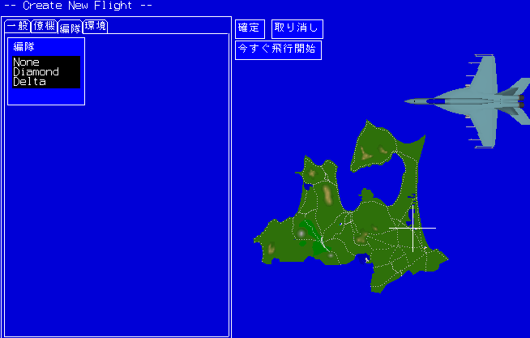
編隊
僚機を選んだ上で、このフォーメーションを選ぶと、僚機は自機について、指定のフォーメーションを作るように飛行します。
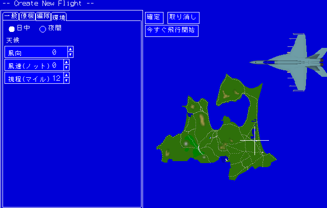
日中/夜間 日中か夜間の選択です。
風向 風向を選びます。
風速 風速を指定します。
視程 視界の指定をします。
飛行機選択
航空機の選択が必要なとき、次のダイアログが開きます。このダイアログを使って、機種、武装、スモーク、燃料などを指定することができます。なお、画面の背景部分でマウスの左ボタンを押して、そのままボタンを押したままマウスを移動することで、飛行機の表示アングルを変更することができます。
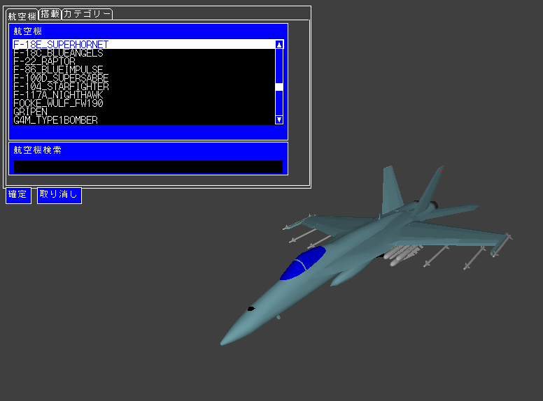
航空機 航空機の種類を選びます。
航空機検索
キーワードで航空機の種類を検索できます。キーワードはスペースで区切って複数入力可能です。例えば、「F
18」とタイプすると、飛行機の種類に"F"と"18"を含む飛行機が航空機のリストに表示されます。
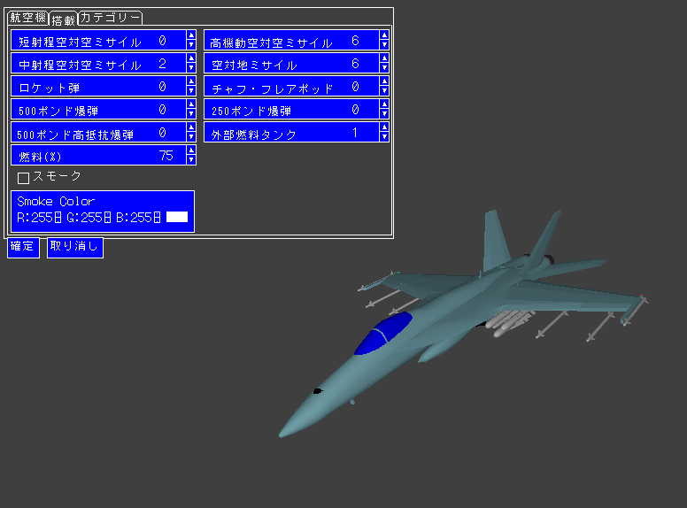
短射程空対空ミサイル
機動性の高い、格闘戦用ミサイルです。発射後、ロックオンを維持しなくても、目標に向かって行きますが、いったん目標を見失うと、そのまま真っ直ぐ飛んでいってしまいます。
高機動空対空ミサイル
機動性の高い、格闘戦用ミサイルです。短射程空対空ミサイルと違って、いったん目標を見失っても、発射母機が目標をロックオンし続けていれば、再度目標に向かいます。
中射程空対空ミサイル
中射程ミサイルです。格闘戦用ミサイルよりは機動性が落ちますが、いったん目標を見失っても、発射母機が目標をロックオンし続けていれば、再度目標に向かって飛んでいくので、遠くから狙うと、しつこく相手を追尾していきます。
空対地ミサイル 地上攻撃用ミサイルです。
ロケット弾
ロケット弾です。狙うのが難しいですが、命中すると機関砲よりは破壊力があります。
チャフ・フレアポッド
ミサイル回避に使うチャフ・フレアを通常より多く搭載できるポッドです。
500ポンド爆弾
中型の爆弾です。破壊力がありますが、低空で投下すると自機が爆発に巻き込まれる危険があります。
250ポンド爆弾
小型の爆弾です。破壊力は小さいですが、直接命中すると戦車ぐらい破壊できます。低空で投下すると自機が爆発に巻き込まれる危険があります。
500ポンド高抵抗爆弾
中型の爆弾で、投下すると空気抵抗を増す翼が開いて、自機より後方に落下します。低空爆撃に適しています。
外部燃料タンク
燃料を多く搭載することができます。空になったり、機動性を増す必要が発生したとき、投下することができます。
燃料 燃料搭載量をパーセントで指定します。
スモーク チェックするとスモークオイルを搭載します。
スモークカラー スモークの色を選ぶことができます。
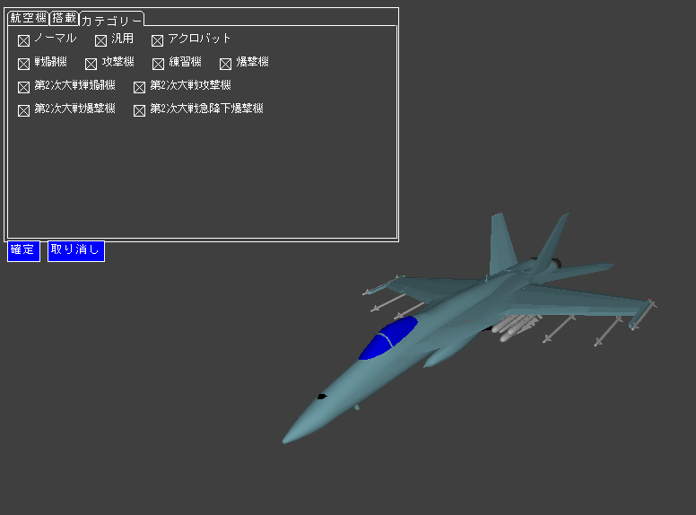
カテゴリー 航空機の種類を選んで、選択範囲を狭めることができます。
空中戦
"Simulation -> Create Air Combat"を選んで、空中戦ミッションを作成することができます。次のダイアログが出るので、フィールド、使用機、味方機、敵機、自機以外のレベルなどを選択してください。"OK"ボタンを押すと、メインメニューに戻るので、ミッションを保存したりできます。すぐにミッションを開始するには、"Fly
Now"ボタンを押してください。"Use
Missile"をオフにすると、空対空ミサイルの使用を禁止するので、機関砲による格闘戦になります。その場合でも、ロケット弾も使えますが、なかなか当たりません。
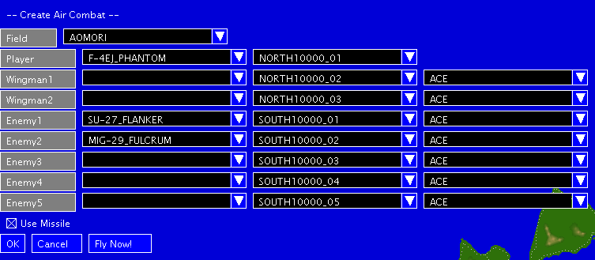
インスタント・ドッグファイト
このモードでは、相手機を撃墜すると、自動的に新しい敵機が発生します。
空中戦は15分に限定で、これを過ぎると新しい敵機は発生しません。この15分を生き残って、最後に残った敵機を撃墜できれば、はじめて着陸して生還するチャンスができます。
インスタント・ドッグファイトモードを使うには、"Simulation"メニューの、"Fly Endurance Mode"を選んでください。
迎撃ミッション
迎撃ミッション（基地防空ミッション)では。僚機とともに飛び立って、基地を攻撃に来る飛行機を撃墜して防衛してください。
迎撃ミッションを飛ぶには、"Simulation"メニューの、"Intercept
Mission"を選んでください。
近接支援ミッション
近接支援ミッションでは、基地に攻めてくる地上部隊を空から撃破してください。どこから攻めてくるのかはマップによって違います。レーダーをうまく使って探してください。なお、一部のマップでは近接支援ミッションは利用できません。
近接支援ミッションを開始するには、"Simulation"メニューの"Close Air Support Mission"を選んでください。
昼/夜、霧、風の設定
昼/夜、霧、風を設定するには、Create
New FlightまたはCreate Air Combatでフライトを作成してから"Simulation"メニューの"Fly"を選ぶ前に、"Simulation"メニューの"Set
Environment"を選んでください。または、設定Dialogで昼/夜を切り替えることもできます。("Simulation"->"Set
Environment"の方が優先)
前回のミッションを再度トライする
前回飛行したミッションに再トライする場合は、"Simulation"メニューの"Retry
Previous Mission"を選んでください。
操縦方法(キーボード、マウス、ジョイスティック)
多分、操縦方法だけプリントアウトしたい人もいると思ったので、ページを分けました。
[ここをクリックしてください]
なお、キーボードでエレベータとエルロンをコントロールすることは可能です。キー/マウス/ジョイスティックの割り当てを変更するを参照してください。
計器の読み方
Head Up Display使用機の場合
標準ヘッドアップディスプレイ
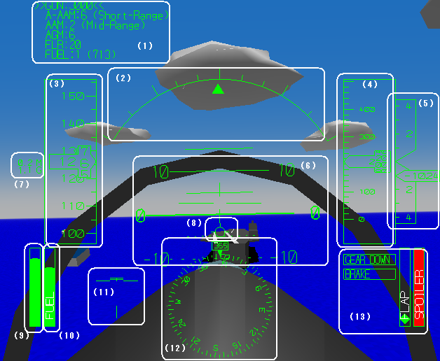
(1) 武装の残量を表示します。
(2) バンク各を表示します。
(3) 対気速度をノット(1kt=1.8km/h)で表示します。
(4) 高度を表示します。
(5) 上昇/降下率を表示します。(feet/minute)
(6) 機の姿勢を表示します。0のラインが地平線です。
(7) マッハ数（音速に対する相対速度) と過重(G)を表示します。
(8)
速度ベクトルを表示します。VキーでOn/Offができます。着陸のとき、この表示を接地点のちょっと先に合わせて降りていくと、うまく接地できますが、「俺はそんなものには頼らねえ！」という人のために、Vキーを押さない限り表示が出ないようになってます(^_^;)
(9) エンジン出力を表示します。
(10) 燃料残量を表示します。
(11) 舵の状態を表示します。
(12) 機首方位を表示します。
(13) 着陸装置、ブレーキ、フラップ、スポイラー（エアブレーキ）の状態を表示します。
簡略ヘッドアップディスプレイ
解像度が低い環境など、標準ヘッドアップディスプレイでは文字が読みにくい場合があります。そのような場合は、設定ダイアログのゲームルールタブで「簡略ヘッドアップディスプレイを使う」をオンにすることで、低解像度でも読みやすいヘッドアップディスプレイを選択することができます。
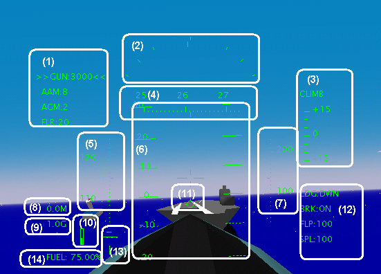
(1) 武装/装備を表示します。>> <<で選択した武器を表示しています。
(2) 横の傾き(バンク角)を表示します。
(3) 上昇/降下率を表示します。(x100 feet/minute)
(4) 方位を表示します。
(5) 速度をノット(1kt=1.8km/h)で表示します。
(6)
機の姿勢を表示します。0のラインが地平線です。
(7) 高度をフィート(1ft=0.3m)で表示します。
(8) 音速に対するスピード(M)を表示します。
(9) 過重(G)を表示します。
(10) スロットルセッティングを表示します。
(11) 速度ベクトルを表示します。VキーでOn/Offができます。着陸のとき、この表示を接地点のちょっと先に合わせて降りていくと、うまく接地できますが、「俺はそんなものには頼らねえ！」という人のために、Vキーを押さない限り表示が出ないようになってます(^_^;)
(12) ランディングギア/車輪ブレーキ/フラップ/エアブレーキの状態を表示します。
(13) 舵の状態を表示します。
(14) 燃料残量を表示します。
計器パネルの場合
(* 計器の配置は機首により異なります。)
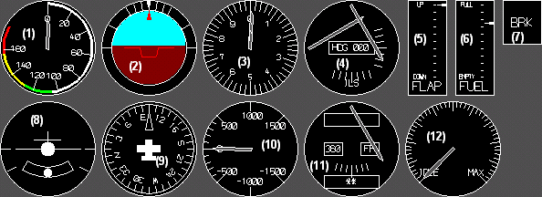
(1) 速度計
(2) 姿勢表示計
(3) 高度計
(4) ILS
(5) フラップ表示
(6) 燃料残量
(7) ブレーキ表示
(8) ターン・コーディネータ
(9) ヘディング・インディケータ （方位）
(10) 垂直速度計
(11) VOR
(12) エンジン出力
計器飛行
2012/07/01バージョンから、管制官の指示に従って目的地まで飛行する計器飛行ができるようになりました。詳しくは、次のURLを参照してください。
http://ifr.jp.ysflight.com
武装
2000/07/03リリースバージョンから、武器の使い方が変わりました。2キーまたはジョイスティックのボタン2で武装選択、1キー,スペースキーまたはジョイスティックのボタン1で発射です。
YSFLIGHT2000では4種類の武器(と、スモーク)を利用できます。
| GUN |
機関砲です。誘導性はありません。また、巨大な目標(空母,橋など)に対しては無効です(ただし、A-10A Thunderbolt 2に搭載の機関砲は効果あります)。 |
| AAM |
空対空ミサイルです。空中目標に向かって誘導されて行きます。全方位から発射可能ですが、目標の背後から発射したときがもっとも命中可能性が高いです。 |
| A-AAM |
空対空ミサイルです。AAMと同様、空中目標に向かって誘導されますが、一度目標を見失ったとしても、発射母機が目標のロックオンを維持していれば、再度目標に向かって行きます。 |
| AGM |
空対地ミサイルです。地上目標に向かって誘導されていきます。 |
| RKT |
ロケット弾です。まっすぐ飛んでいきます。 |
| FLR |
ミサイルを避けるためのフレアです。ミサイルを撃たれたら、フレアを射出して、高G旋回すると回避することができます。 |
| BOM |
500ポンド自由落下爆弾、250ポンド自由落下爆弾、500lb高抵抗爆弾の三種類の爆弾があります。たくさん積んでるとB-2など重くてなかなか上昇しません。誘導性はありません。目標を直撃したときがもっとも効果がありますが、そうでなくても近くに落ちたら目標を破壊することができます。
なお、高抵抗爆弾には照準が出ません。 |
| SMOKE |
武器ではないですが、武器と同様に操作することができます。 |
| FUEL |
外部燃料タンクです。緊急に機体を軽くする必要がある場合など、投下できます。 |
利用可能な武器は飛行機の種類によって異なります。
航法支援設備(VOR, ADF)、計器着陸装置 (ILS)、レーダー
YSFLIGHTでは、VORとADFの二種類の航法計器を利用することができます。
VORは、あるVORステーションを通る直線の飛行経路を仮定して、自分の飛行機から見てその飛行経路の左右のずれを表示する計器です。また、ステーションが自分から見て前後どちら側にあるのかも知ることができます。YSFLIGHTの飛行機の多くはVORの受信機を二台積んでいて、区別するためにNAV1,
NAV2と呼びます。
VORを利用するためには、まずステーションを選択し、続いて直線の飛行経路の方位（OBS）を設定します。設定対象のVORを指定するには、Lキーを使います。一度Lキーを押すと、NAV1ステーション選択メニューが表示されます。もう一度Lキーを押すと、NAV2、さらにもう一度押すとNDBステーションの選択メニューに切り替わります。NDBはADFの説明のところであらためて説明します。ステーション選択メニューで、一ページにステーションの表示が入りきらない場合は、9キーで次のページを表示することができます。ステーションを選択した後、続いてOBSを設定します。OBSは7キーと8キーで変更することができます。
VORの読み方は次の通りです。自機をOBSが指すヘディングに向けたと仮定します。そのとき、VORの針は、自機から見てVORが左右どちらにあるのかを表示します。例えば、下の図のNAV1の針は左側にあるので、自機のヘディングを360に向けたとき、VORステーションは右側にあるということになります。また、OBSの横の表示が▲または「TO」のとき、VORステーションは、自機から見て前方に、▼または「FR]のときは、後方にあることになります。
| 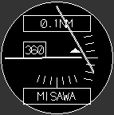 |
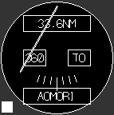 |
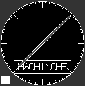 |
| NAV1 |
NAV2 |
ADF |
VORの使い方を最初に勉強したときは、なんとややこしい計器だろう、と、思ったものでしたが、ステーション上空に到達したいだけであれば割と簡単な使い方があります。まず、ステーションを選択して、7キーまたは8キーで、針が中央でTO/FR表示が「TO」または▲になるまでOBSをまわしてください。針が中央でTO/FR表示が「TO」または▲になったOBSの方向にステーションがあるので、そっちに飛んでいけばいずれステーションの上に到達します。
また、NAV1は計器着陸装置(ILS)も兼ねています。NAV2もILSに合わせることができますが、縦のガイダンス（グライド・スロープ）の表示が出ません。NAV1のステーション選択画面でILSを選ぶと、VORには理想的な自機から見た着陸進入コースのズレを表示します。ILSを選択した状態では、OBSは表示に関係ありません。ILSは着陸進入コースの上下のズレも表示します。NAV1の横の針が、グライド・スロープと言って、自機から見た着陸進入コースの上下のズレです。基本的に、着陸コースに乗ったら、あとは、針を追いかけるつもりで操縦することで、滑走路にまっすぐ下りていくことができます。
また、ヘッド・アップ・ディスプレイのある機体では、下のようにヘッド・アップ・ディスプレイ上にもILSを表示します。
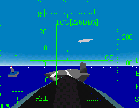
簡単に言うと、ILSは自分の機がどちらに進むべきかを表示していると考えることができるので、ILSの線が見える方に機を持って行くように操縦すれば、うまく滑走路に滑り込むことができます。なお、機が滑走路の方を向いているのが前提なので、滑走路と反対側に向かって飛んでいるときはILSを参照しながら飛んでもただ上に上っていくだけです(^_^;)
また、ADFはもっと単純で、NDBステーションを選ぶと、自分から見てNDBステーションがどちらにあるのかを表示します。針が真上を向くように維持していれば、そのうちADFステーションの真上に着きます。実機では、このADFはふらふら揺れる上に精度が悪いので、結構使うには苦労しますが、YSFLIGHTのADFは非常に安定しているので結構使えます(^_^;)
3キーまたはジョイスティックのボタン3を押すことで、レーダーを、OFF
→ 5 miles → 10 miles → 50 miles の順に切り替えることができます。
レーダーには、対空モード、対地モード、爆撃モードの3種類のモードがあります。モードは武装を選択すると自動的に切り替わります。
| 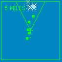 |
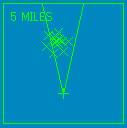 |
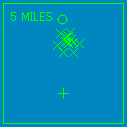 |
| (対空モード) |
(対地モード) |
(爆撃モード) |
対空モードでは、Xマークが地上物、■マークが飛行機を表します。白のマークは味方、緑のマークは敵を表します。■から突き出ている短い線は飛行機が飛んでいる方向を示します。
対地モードは、対空モードとほぼ同じですが、飛行機の前にあるオブジェクトがより多く見えるようになっています。
爆撃モードでは、○で爆弾の予想着弾点を示します。この○を参照しながら、B-2やTu-144で絨毯爆撃(１機なので絨毯というよりは直線的ですが....)することができます。
燃料・武器補給
空母上または補給トラックの近くで完全に停止してHOMEキーを押すことで、燃料や武器を補給することができます。下のダイアログで、武器、燃料の分量を選んで、OKを押してください。なお、メインメニューで、"Option
-> Change Key/Joystick Assignment"を選ぶことで、HOMEキー以外にこの機能を割り当てることもできます。
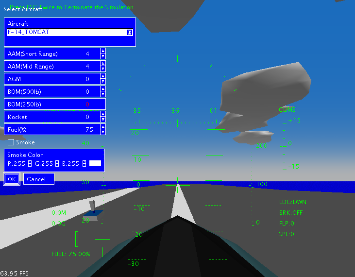
ネットワーク対戦
注意:
Windows XP Service Pack 2で、ネット対戦を利用したい場合は、YSFLIGHTに対するWindows
Firewallによるブロックを解除する必要があります。詳しくはこちらをご参照ください。
20001125リリースバージョンから、ネットワーク対戦機能がつきました。複数人のプレーヤーが共通のエアスペースを飛行して、お互いに格闘戦をしたり、あるいは、強固に防衛された地上目標に攻撃したりすることができます。高速な回線があれば、6人で飛んで編隊アクロを実施することも不可能では無いと思います。そんなにテストプレイヤーがいないので、こちらでは何人まで大丈夫か実験はしていませんが。。。。一応17人まで同時にプレイできるように作ったつもりです。
20021205バージョンから、ネット対戦でEndurance ModeとIntercept
Missionができるようになりました。これを使うとコンピュータ機を相手に共同で空中戦や基地防空ミッションに出ることができます。サーバーメニューでEキーでEndurance
Mode、 BキーでIntercept Missionを開始します。Tキーで中止です。(なお、Tキーを押してもすでに飛行中のコンピュータ機は消えないので、がんばって撃墜してください)
ネットワークプレイでは、自分の飛行機に弾丸が命中していないように見えても、相手機の画面ではばっちり弾丸が自機に命中している場合があります。これは、どんなに速いネットワークでも位置の伝達の遅延が発生するためで、防ぎようがありません。プログラムを頭良くして遅延時間を見こんで相手の未来予測位置を表示するようにプログラムを書けば、ある程度はなんとかなるんですが、そこまで手間かける気になりません(^_^;)そこで、YSFLIGHTでは、弾丸の命中のルールを次のようにしました。
弾丸を発射したユーザがいるPC上か、あるいは被弾したユーザがいるPC上かどちらかで弾丸が命中した場合、本当に命中したことにする。
要するに、発射した機側か、被弾した機側かどっちか一方のPCで命中してれば命中したことになります。
したがって、相手が発射している弾丸が自分の機の後ろをすり抜けているように見えても油断しないで回避するように努力してください。ひょっとすると命中したことになってるかもしれません。仮に0.1秒の遅延が発生しているとすると、自分の機体が200m/sぐらいで飛んでいるならば、相手機の弾丸が20mぐらい後方にはずれているように見えても実は命中してしまっているでしょう。あと、これは楽しむゲームですので、「今のは命中してなかった!!!!」とか言って喧嘩を始めないようにしましょう。
遠隔地のプレイヤー同士で飛行する場合は、飛行中、相手のプレイヤーとチャットしたい場合があるかもしれません。しかし、YSFLIGHT2000にはチャット機能はありません。そこで、YSFLIGHT2000のウィンドウの脇に他のチャットプログラムを起動して利用することができます。しかし、チャットプログラムを利用している最中は飛行機のコントロールができません。チャット中の墜落事故を防止するために、自動操縦装置を利用することができます。BSキーを一度押すと、飛行機は上空待機パターンを飛行します。もういちどBSキーを押すと上空待機を解除します。
ただし、音声チャットプログラムとYSFLIGHT2000を同時に利用することはお勧めしません。こちらの実験では、音声チャットプログラムとYSFLIGHT2000を同時に起動すると、Windowsごとフリーズしてしまうことを確認しています。この問題について、YSFLIGHT2000の効果音をオフにする以外の有効な対策はまだわかっていません。かりに、効果音をオフにしてYSFLIGHT2000を無事起動したとしても、音声の転送にかかるネットワークの負荷が大きすぎてまともなネットワーク対戦になりません。
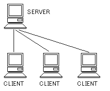ネットワークプレイでは、右の図のように、一台のコンピュータがサーバーとして動作しなくてはなりません。他のコンピュータはクライアントとしてサーバーに接続してプレイします。
プレイヤーはサーバーPCを使っていてももクライアントPCを使っていても同様にネットワーク対戦に参加することができます。
サーバーを起動するには、NetworkメニューのServerを選びます。ログイン名をタイプするとサーバーが起動します。クライアントとしてサーバーにアクセスするには、NetworkメニューのClientを選び、次に接続先ホスト名(インターネット上のアドレス)をタイプするとサーバーにログインできます。
接続先ホスト名は、Server起動時にServerメニューの下に次のように表示されます。このアドレスを友達に電話なりchat
programなり、適当な方法で伝えるといいでしょう。
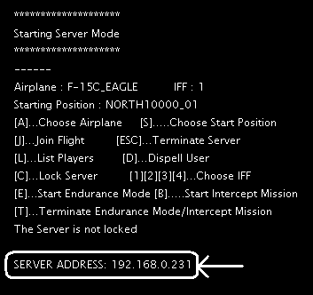
ただし、サーバーになるPCが複数のネットワークコネクションを持っている場合や、IPアドレスを他のPCと共有している場合(例:ダイヤルアップルータを使っている場合など)、このアドレスでは接続できない場合があります。その場合、正しいアドレスはネットワーク管理者の人に問い合わせてください。なお、環境によってはサーバーになれない場合もあります。ホスト名の問い合わせのメールが僕にたくさん届いて困っているので、そういうメールはすべて無視します。
注意: ClientのYSFLIGHTバージョンがServerのバージョンと異なる場合、次のようなメッセージが出て、接続を拒否される場合があります。
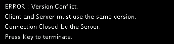
この場合、ServerとClientを最新版YSFLIGHTに更新してからやりなおしてください。
(* なお、20021205バージョン以降では、ネット越しの飛行機の動きをスムーズにする機能がついていますが、ServerかClientのどちらかが20021205バージョンよりも古いバージョンを利用している場合、この機能は働きません。)
これで接続完了です。
サーバー（コンソールサーバーを除く）を起動すると、右上にサーバーダイアログが出ます。このダイアログを使って、サーバーの操作（航空機選択、開始位置選択、IFF指定、飛行開始など、または、ミッションの開始）ができます。
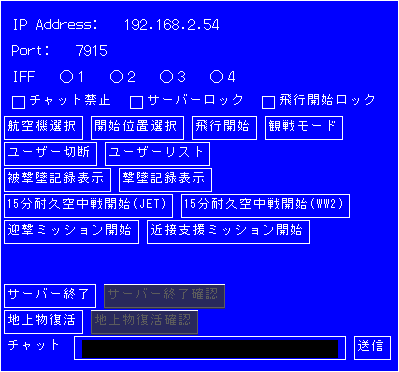
サーバーダイアログ
クライアントがサーバーにログオンすると、右上にクライアントダイアログが出ます。このダイアログを使って、クライアントの操作（航空機選択、開始位置選択、IFF指定、飛行開始など）ができます。
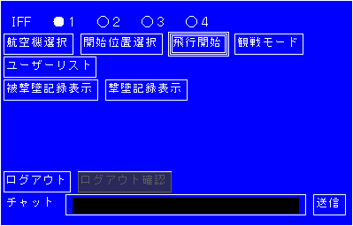
クライアントダイアログ
または、ショートカットキーでも操作可能です。それぞれのキーの意味は次の通りです。
| A |
飛行機の選択 |
| S |
開始位置の選択 |
| J |
飛行開始 |
| L |
ユーザ一覧を表示する(クライアントは飛行中のユーザ一覧のみ) |
| D |
ユーザを選んで強制切断する。(サーバ−のみ) |
| C |
サーバーをロックして、以後のログオンを禁止する。ふたたびCキーを押すことで解除。(サーバーのみ) |
| E |
Endurance Mode開始(サーバーのみ) |
| B |
Intercept Mission開始(サーバーのみ) |
| P |
近接支援ミッションを開始（サーバーのみ） |
| T |
Endurance ModeまたはIntercept Missionを中止する。 |
| F12 |
チャットメッセージをタイプして送信する。 |
| ESC |
サーバーまたはクライアントを終了する |
| 1,2,3,4 |
IFF(敵味方識別装置)の選択。同じIFFを持った航空機をミサイルでロックオンすることはできません。 |
なお、飛行機や飛行開始位置の選択は、カーソルキーの↑↓で移動、改行キーかスペースキーで決定です。SHIFTキーを押しながら↑↓キーを押すと、より速く移動します。ESCキーを押しても選択されてしまうので注意してください（取り消しにならない）。
また、複数人でプレイする場合は、同じ場所から同時に出ていきなり空中衝突してしまわないように注意してください。
このネットワーク対戦機能は、電話回線で接続して遠隔地でプレイすることはあまり想定していなくて、同じ部屋の中で10Base-T以上のスピードで接続したPCがたくさんあって、お互い声で話ができるところでプレイするようなことを考えてます。ですので、チャット機能はついてません。どうしてもチャットしたい場合は、YSFLIGHTと同時に別のチャットプログラムを起動して、そちらをご利用ください。
また、NetworkメニューのNetwork Optionで、ネットワーク対戦機能の設定を変更することができます。NetworkメニューのNetwork Optionを選ぶと、次のダイアログが開きます。それぞれの項目の意味は次の通りです。
(*
なお、ネットワーク対戦モードのデフォルトの飛行機の選択は、Config
Dialogに統合しました)
|
General
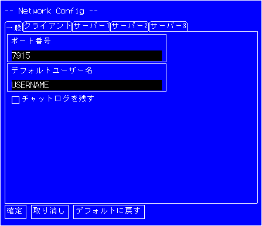 |
| ポート番号 |
ネットワークポート番号を指定します。デフォルトは7915です。この番号がサーバーと合ってないとクライアントは接続できません。 |
| デフォルトユーザ名 |
デフォルトのユーザ名を指定します。
なお、ここをUSERNAMEのままにしておくと、ネット対戦で"nameless"になってしまうので、設定しておきましょう。 |
| チャットログを残す |
このボックスをチェックすると、チャットのログを"My Documents\YSFLIGHT.COM\YSFLIGHT\netchatlog"に保存します。 |
| Client
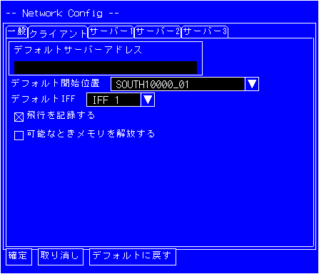 |
| デフォルトサーバーアドレス |
デフォルトで接続するホスト名を指定します。ここで指定したホスト名がNetwork
-> Clientを選んだときに出る接続先指定ダイアログに最初に出ます。 |
| デフォルト開始位置 |
クライアントとして参加する場合のデフォルトの開始位置を指定します。 |
| デフォルトIFF |
クライアントとして参加する場合のデフォルトのIFF(敵味方識別装置)を指定します。 |
| 飛行を記録する |
このチェックをオンにすると、クライアントとして参加したとき飛行を記録します。オフになっていると飛行記録は残りません。 |
| Server1
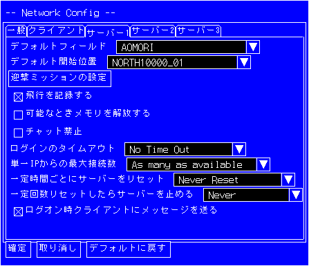 |
| デフォルトフィールド |
ネットワークプレイで使用するフィールドを指定します。この設定は、サーバーとしてPCを利用するときのみ有効です。飛行するフィールドの決定権はサーバー側にあり、クライアントはフィールドを途中から変更することはできません。(できたら大変ですよね(^_^;)飛んでる途中でいきなり目の前の景色が変わったりして(^_^;)) |
| デフォルト開始位置 |
サーバーとしてPCを利用するときの、デフォルトの飛行開始位置を指定します。飛行開始位置はサーバーを起動後に[S]キーで変更することもできます。 |
| 迎撃ミッション設定 |
ネット対戦でIntercept Missionを実行する場合の条件を設定します。 |
| 飛行を記録する |
このチェックボックスをオンにすると、サーバーとしてPCを利用するとき、飛行を記録します。デフォルトではオフです。(オフでは飛行記録は残りません) |
| 可能なときメモリを解放する |
このチェックボックスがオンだと、一定時間何も活動が無い場合メモリをある程度解放します。長時間サーバーを実行する場合などはオンにしておくといいです。 |
| チャット禁止 |
ユーザ同士のテキストメッセージの送受信を禁止します。 |
| ログインのタイムアウト |
クライアントがサーバーに接続してから、指定時間以内にログオンリクエストを送信しなかった場合、クライアントを切断します。 |
| 単一IPからの最大接続数 |
同一のIPアドレスからの接続数を制限します。 |
| 一定時間ごとにサーバーをリセット |
一定時間ごとにサーバーをリセットする場合、ここに時間を指定します。 |
| 一定回数リセットしたらサーバーを止める |
Reset
ServerでNever以外を選んだ上で、このオプションで回数を指定すると、指定回数だけサーバーをリセット後、自動的にサーバーが終了します。
Reset ServerとStop Server After
Resettingを使うと、例えば週末だけ自動的にサーバーを起動するような使い方ができます。Reset Serverに6時間を指定し、Stop
Server After Resettingに9
times(9回)と指定すると、合計54時間サーバーが動く計算になります。なので、二日と6時間動きつづけることになります。あとは、これを、金曜日の午後6時に起動して、サーバーが終わると同時にプログラムが終了するようにすればいいのです。例えば、タスクスケジューラを使って、
fsmaino -server AutoServer -autoexit
と起動するように仕掛ければいいでしょう。 |
| Server2
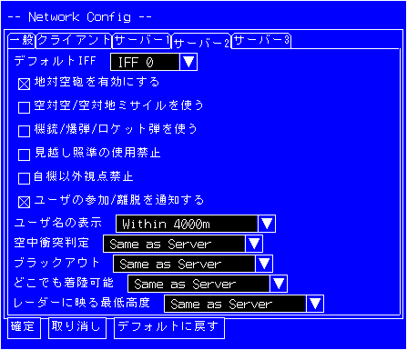 |
| デフォルトIFF |
サーバーとしてPCを利用するときの、IFF(敵味方識別装置)のデフォルト値を指定します。 |
| 地対空砲を有効にする |
このチェックボックスをオンにするとネット対戦で地対空砲を有効にします。 |
| 空対空・空対地ミサイルを使う |
ネットワーク対戦でAAMとAGMを利用するかしないかを指定します。 |
| 機銃/爆弾/ロケット弾を使う |
ネットワーク対戦で機関砲、爆弾、ロケット弾を使用する/しないを指定します。 |
| 見越し照準の使用禁止 |
このオプションがオンだと、クライアント上の設定にかかわらず、全クライアントで見越し照準が使えなくなります。 |
| 自機以外視点禁止 |
このオプションがオンだと、ネット対戦中に、F3キーなどで他の機体を見ることを禁止します。 |
| ユーザの参加/離脱を通知する |
このオプションがオンだと、ネット対戦中に、誰か他のユーザの飛行開始/終了をメッセージで知らせます。 |
| ユーザ名の表示 |
ユーザ名の表示をAlways
(常に表示)か、あるいは、一定距離内に接近したときのみ表示するかを指定します。 |
| 空中衝突判定 |
ネット対戦でのMid Air
Collisionの設定を、サーバー上の設定と同じ(Same as server)、常にオン (Enable)、常にオフ
(Disable)、または、各PCごとの設定に任せる (Don't control)かを選択します。 |
| ブラックアウト |
ネット対戦でのBlack Outの設定を、サーバー上の設定と同じ(Same as
server)、常にオン (Enable)、常にオフ (Disable)、または、各PCごとの設定に任せる (Don't
control)かを選択します。 |
| どこでも着陸可能 |
ネット対戦でのCan Land
Anywhereの設定を、サーバー上の設定と同じ(Same as server)、常にオン (Enable)、常にオフ
(Disable)、または、各PCごとの設定に任せる (Don't control)かを選択します。 |
| レーダーに映る最低高度 |
"Same as
Server"を選ぶと、飛行機がレーダーに映る最低高度を全クライアントでサーバーと同じ高度にします。 |
|
Server 3
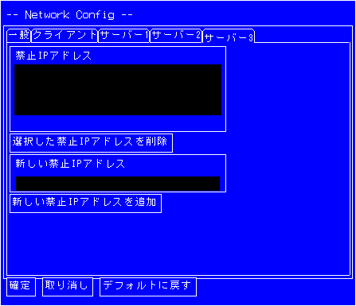 |
| 禁止IPアドレス |
このリストにあるIPアドレスからの接続要求があっても、サーバーが拒否します。 |
| 選択した禁止IPアドレスを削除 |
選択したIPアドレスをリストから削除します。 |
| 新しい禁止IPアドレスを追加 |
IPアドレスを追加します。 |
| その他 |
| デフォルトに戻す |
設定をデフォルトに戻します。 |
フライト・レコード・ユーティリティ
- 飛行記録の間引き
うまく飛行できたときなどは、飛行記録を友達にE-Mailで送ったり、Web
siteにアップロードしたりしたいと思います。しかし、フライトレコードファイルは、大きなファイルになりがちです。そのような場合、飛行記録の精度を減らして、ファイルサイズを減らすことができます。
注意:
いったん精度を減らしてしまうと、元に戻すことはできません。精度を下げる前に、元のデータをバックアップとしてセーブしておくことをお勧めします。
精度を下げるには、二通り方法があって、ひとつは、時間の精度を下げる方法、もうひとつは位置の精度を下げる方法です。時間の精度を下げるには、"Flight
Record Utility"から"Set Time Interval"を選んで、時間のステップを指定してください。デフォルトでは、0.05秒ステップになっていて、これは、0.05秒に一度飛行記録を取る、という意味です。これを0.1秒にすると、飛行記録のサイズは約半分になります。
もうひとつの方法は、位置の精度を下げる方法です。位置の精度を下げるには"Flight
Record Utility"から"Set Space Precision"を選んで、精度を指定してください(単位はメートル)。デフォルトでは、0.01(１センチ)の精度なので、飛行記録は、小数点以下2桁まで位置を記録します。
- 飛行記録の編集
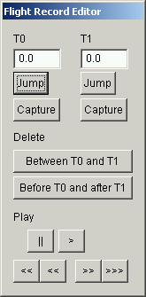精度を落とす他に、飛行記録のいらない部分を削除して、おもしろい部分だけ残すことができます。それには、"Flight
Record Utility"から"Edit Flight Record"を選んでください。画面は、飛行記録再生と似ていますが、右のようなダイアログが開きます。それぞれのテキストボックス、ボタンの意味は以下の通りです。
注意:
いったんフライトレコードの一部を削除すると、元に戻すことはできません。編集前に元のデータをバックアップとしてセーブしておくことをお勧めします。
| T0, T1 |
タイムマーカーです。時刻を手動で入力することもできますし、"Capture"ボタンで押した時点の再生位置の時刻をセットすることもできます。 |
| Jump |
タイムマーカーの時刻にジャンプします。 |
| Capture |
再生位置の時刻をタイムマーカーにセットします。 |
| Delete-Between T0 and T1 |
T0とT1の間のフライトレコードを削除します。 |
| Delete-Before T0 and after T1 |
T0とT1の間のフライトレコードを残して他を削除します。 |
| Play- || |
再生を一時停止します。 |
| Play- > |
通常再生します。 |
| Play- <<< |
高速巻き戻し再生 |
| Play- << |
巻き戻し再生 |
| Play- >> |
速送り再生 |
| Play- >>> |
高速速送り再生 |
地上物
- 地上物の操作方法
"シミュレーション"→"シミュレーション(地上物)の作成"を選ぶか、または、"シミュレーション"→"地対空基地防空ミッション"を選ぶと、地上物に乗って操作することができます。
地上物に乗っているときの操作方法は次のとおりです。
スロットル(デフォルトQ/Aキー、またはジョイスティックの第3軸): 前進速度のコントロール
ブレーキ（デフォルトBキー): ブレーキオン/オフ
逆噴射キー(デフォルト「.」キー): 後退
操縦桿: 武装を選択していないとき→左右にターン, 武装選択時→発射方向のコントロール
-
地対空防衛ミッション
"シミュレーション"→"地対空基地防空ミッション"を選ぶと、地対空防空ミッションができます。地対空防空ミッションは、地上物を操作して、攻撃してくる敵機を撃墜して、基地への被害を最小にすることが目的です。地対空防衛ミッションを選んで、次に、マップと操作する地上物を選んで、開始してください。すべてのマップで地対空防衛ミッションができるわけではなくて、地対空防衛ミッション用の地上物が配置してあるマップのみ選択可能です。
3Dグラフィクスプログラミングに興味のある人へ
このプログラムは、 Blue Impulse 3D Graphics SDKおよび、
YS Geometric Calculation Libraryを利用して開発しました。
Blue Impulseは、インタラクティブな3Dグラフィクスプログラミング用SDKとして、僕の修士論文の研究で開発したツールキットです。このツールキットは比較的遅いプラットフォームでもそこそこ高速に動作します。また、クロスプラットフォームな点もひとつ大きな特徴です。現にこのフライトシミュレータ、コンパイルしなおせばX-WindowやSGIマシン上で動きます。ダイアログとかWin32依存の部分は動きませんが(#ifdef〜#endifではじいてある)。もうひとつの特徴は、スケーラブルな点です。Windows上でコンパイルする場合、フラットシェーディングの標準バージョンのライブラリを使ってコンパイルすると比較的低スペックのマシンでも高速に動作しますが、高速な機種用にOpenGLバージョンのライブラリを使ってコンパイルすると、同じソースでそのままスムーズシェーディングのプログラムを得ることができます(例えばこのフライトシミュレータの標準バージョンとOpenGLバージョンみたいな感じ)。
YS Geometric Calculation Libraryは、広範囲の3次元幾何計算機能を提供します。ベクタークラス、マトリクスクラス、シェルクラスはもちろん、シェルの当たり判定、ブーリアンオペレーションがあったり、さらに配列クラスやリンクリストクラスまで提供してます。
両方のツールキットはフリーでオープンソースです。よかったら次のWebページを見に来てください。
が、YSFLIGHT2000のソースコードまでオープンという意味ではありません。YSFLIGHT2000のソースコードの公開の予定はありませんので、ご了承ください。それから、このツールキットはYSFLIGHT2000の基礎なっていますが、YSFLIGHT2000は、これに加えて結構な機能を追加しているので、Blue
Impulse 3D Graphics SDKのツールを使ったら労せずして追加機とか追加マップが作れるわけではありません。Blue
Impulse 3D Graphics SDKはYSFLIGHT2000のためのツールキットではなくて汎用3次元グラフィックスツールキットです。
連絡先
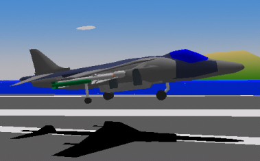コメントなどありましたら、下記アドレスまでお気軽にメールください。
サポートWeb-Page:
http://www.ysflight.com
関連Web-Page:
AIRPLANE
SOFTWARE - Download cool 3D airplane screensavers
etc.
Airplane
Photo Gallery - Tons of airplane
photos.
Appendix A - 開始位置の表記について
| RWxx_yy |
滑走路上。xxは滑走路方向。yyは位置の便宜状の識別番号。 |
NORTHxxxxx_yy,
SOUTHxxxxx_yy,
EASTxxxxx_yy,
WESTxxxxx_yy |
北、南、東、西の高度xxxxx、開始位置識別番号yy。 |
Appendix B - 例題ミッション
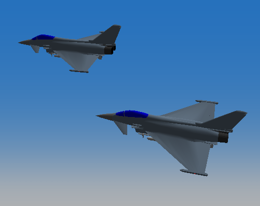このプログラムにはいくつかの例題ミッションが付属しています。この例題ミッションを飛行するには、ファイル(F)->ミッションを開くを選び、次に、ダイアログでミッションファイルを選んで、次に今すぐ飛行開始を
押してください。
以下にそれぞれについて簡単に説明します。
-
EscortMission.yfs
前線基地に補給物資を搭載したC-130が飛来します。敵の攻撃を阻止して、C-130を無事前線基地まで護衛してください。
-
PirateAttack.yfs
貨物船が海賊の攻撃を受けています。空母から飛び立って、貨物船が沈没する前に海賊船をすべて撃沈してください。
-
fly_f22.yfs
単にF-22で飛び上がるだけです。一応、旧バージョンの名残で残してあります。
-
A6M5vsB29.yfs
B29の編隊が三沢基地を攻撃するために飛行しています。零戦で飛び立ち、爆弾を投下する前に迎撃してください。B-29は銃座から反撃してきます。また、八戸基地から1機、三沢基地から1機の味方機が一緒に飛び上がります。適切な指示を与えることで、迎撃作戦を有利に展開することができます。
-
P51vsG4M.yfs
一式陸攻(G4M)の編隊が接近中です。基地を攻撃される前にP-51で迎撃してください。味方2機に適切な指示を与えることで、迎撃作戦を有利に展開することができます。
-
SpitfireVsFw190.yfs
ロンドン上空、英国王立空軍Spitfireと、ドイツ空軍Focke Wulf
190の空中戦です。無事、全敵機を撃ち落したら、ヒースロー空港に帰還してください。
-
fleetbattle1.yfs
F-18Cで空母を僚機と飛び立ち、東に向かって飛んでください。そして、敵艦隊の攻撃を受けている味方空母が撃沈される前に敵艦隊を全滅させてください。ミッション終了後は、陸上の空港か空母に帰還してください。僚機にうまく指示を出すのが勝利のポイントです。
-
fleetbattle2.yfs
F-18Cで空母を僚機と飛び立ち、東に向かって飛んでください。そして、空母を含む敵艦隊を全滅させてください。敵艦隊上空は護衛戦闘機が警戒しています。中距離ミサイルをうまく使って敵機を減らした後、残った護衛戦闘機は格闘戦で撃墜してください。ミッション終了後は、空母に帰還してください。これも、僚機にうまく指示を出すのが勝利のポイントです。
-
concorde_in_hawaii.yfs
ハワイ島、コナ国際空港をコンコルドで飛び立ちましょう。Turn
left heading 310。高度45,000ftまで上昇して、マッハ2.0まで加速、オアフ島が近づいたら降下減速しながらオアフ島の南側をヘディング260で通過、左に180度旋回してホノルル国際空港滑走路08LにILSアプローチしましょう。最終進入速度は160ktです。PageUp/PageDownキーで可変鼻(droop
nose)をコントロールして下方視界を確保しましょう。
-
badiamond.yfs
-
bidiamond.yfs
-
tbdiamond.yfs
かの有名な、アメリカ海軍Blue Angels、アメリカ空軍Thunderbirds、航空自衛隊Blue Impulseの編隊長をやってみましょう。最初、滑走路上でスタートします。後ろを見ると、3機の僚機が見えます。(MキーかPOVボタンを使う)。
離陸するには、アフターバーナー全開で、スロットルを最大まで引き上げます。(TABキーを一度押してからQキーをスロットルが全開になるまで連打する、あるいは、外付けスロットルレバーがあるならレバーを一番前まで押します)。
離陸したら、10度〜15度ピッチを維持してください。BキーかPOVボタンで後ろをときどき見てください。4番機がポジションに滑り込むのが見えるはずです。4番機が位置に入ったら、アフターバーナーを切ってスロットルを半分ぐらいまで下げてください。(TABキーをもう一度押してAキーを何度か押すか、あるいは外付けスロットルレバーを手前に引いてください)。
ふたたびMキーまたはPOVを使って後ろを見ながら他の3機が追いつくのを待ちます。この間、ゆっくりした旋回ならしてもかまいません。
ここまで来たら、あとはどう飛んでもかまいません。が、あなたは編隊長だということを忘れないでください。急激な機動、とくに急なロールにたいして後続機は着いて来れません。最悪空中衝突してしまいます。また、スロットルを最大や最小にすると、僚機はそれ以上加速/減速できずに遅れたりつんのめって前に出てしまったりします。速度は200kt〜300ktを維持してください。
トリガボタンの1または2を押すと、他の機がスモークを出します。ということで、スモークを出しながら、ダイヤモンドループ、ダイヤモンドロール、その他なんでもトライできます。注意としては、機動中は、常にプラスGを保つようにしてください。2G以上を維持するとより良いです。
最後に、着陸です。他の飛行機は何も考えずについてきます。横に2機いるので滑走路のセンターラインにぴったり降りないと横の2機は滑走路から飛び出してしまいます。
がんばって、トライしてみましょう。
Appendix C - 地上攻撃ミッションについて
20000226バージョンから、地対空兵器が登場しました。というわけで、地上攻撃ミッションなど実施してみたくなります。各マップには、なぜか堅固に防衛された地上攻撃目標が存在します。なんで基地から20〜30km圏内にこんな堅固に防衛された敵地上目標が? という疑問はひとまず置いて、とりあえず、地対空砲をくぐりながらの地上攻撃に挑戦してみることができます。マップによっては、開始位置に「CLOSEBY THE GROUND TARGET(地上目標近く)」というのがありますが、それ以外の場合は、飛んで探してみてください。地上目標の周囲は、対空機関砲、地対空ミサイルで防衛されているので、これらを避けながら地上目標に対してAGMと機関砲でアタックしてみてください。
また、那覇基地の南の方に突如出現した(?)小さな島に空母からA-4 Skyhawkで飛び立って攻撃するとかいうのはかなり歯ごたえがあります。A-6 Intruderで出たりA-10で出たりするとちょっと簡単過ぎるかもしれないですね。
20040113バージョンで、AIRSTRIKE_CHALLENGEマップを追加しました。このマップでは、市街地に紛れ込んだ戦車やトラックを周囲に被害を出さないように破壊したり、起伏のある地形を移動する戦車を攻撃したり、多数の対空砲に護衛された発電所を攻撃したり挑戦してみてください。すべての目標を破壊するには、A-10を使わないと難しいかもしれません。
なお、近接支援ミッションも参照してください。
Appendix D -
コマンドパラメータについて
YSFLIGHT起動時に、以下のコマンドパラメータを指定することができます。Windows版でもDOS窓から起動するときや、ロビーソフトから起動するときなどに指定することができます。
-h
-help
ヘルプの表示。
-keymenu
キーメニュー。(マウスでメニューを選ぶのではなく、数字キーでメニューを指定)
-replayrecord Filename
Filenameで指定したフライトレコードを再生する。
-freeflight Airplane Field Position
Airplaneで指定した飛行機で、Fieldで指定したマップの開始位置Positionからフリーフライトを開始。
-flyyfs Filename
Filenameで指定した.YFSファイルを読み込んで飛行開始。
-endurance Airplane Field NWingmen WingmenLvl UseMissile
15分耐久空中戦。
NWingmen : 0 to 2
WingmenLvl : 1 to 5
UseMissile : 0(not use) or 1(use)
-intercept Airplane Field Stealth Escort HeavyBomber Bomb NEnemy NWingmen
15分耐久基地防空ミッション。
Stealth : 0(not allow stealth) or 1(allow stealth)
Escort : 0(not allow fighter escort) or 1(allow fighter escort)
Bomb : 0(not allow bomb) or 1(allow bomb)
NEnemy : 1 to 5
NWingmen : 0 to 2
-server Username Fieldname
ネットワークのサーバーモードを開始。Fieldnameは省略化。（省略するとデフォルトフィールドが使われる）
-client Username ServerHostName
ネット対戦のクライアントモードを開始。ServerHostNameで指定したホストに接続。
-netport portNumber
ネット対戦のポート番号を指定。-clientまたは-serverオプションと同時に指定したときのみ有効。
-autoexit
飛行終了後自動的に終了。
-saveflight Filename
飛行終了後指定ファイル名でフライトレコードを保存。
-listairplane
飛行機一覧をコンソールに出力。
-listfield
選択可能なフィールド一覧をコンソールに出力。
-liststartpos Fieldname
選択可能な開始位置一覧をコンソールに出力。
-setdefaultconfig
設定をデフォルトに戻す。
-setdefaultnetconfig
ネットワーク設定をデフォルトに戻す。
-setdefaultkeyassign
キーボード、ジョイスティック/マウスの割り当てをデフォルトに戻す。
-setdefaultoption
オプションをデフォルトに戻す。
Appendix E -
設定ファイルについて
Linux版では、設定ダイアログなどが出ないので、設定を変更するには直接設定ファイルをテキストエディタで編集する必要があります。設定ファイルの書き方については、documentフォルダ内のconfigfiles.txtを参照してください。なお、もともとプログラムで書き換えることを前提にしていたので、パラメータの指定がないとそのまま落ちたりするのでご注意ください(^_^;)あと、日本語訳してませんがごめんなさい(^_^;)
なお、設定ファイルをいじって変になってしまったときは、次のコマンドパラメータを指定してプログラムを起動すると、初期化します。
-setdefaultconfig
-setdefaultnetconfig
-setdefaultkeyassign
-setdefaultoption
(*) 20090611バージョンからLinux版もダイアログが使えるようになりました。
ご意見、ご質問などありましたら、お気軽に次のメールアドレスまでメールください。